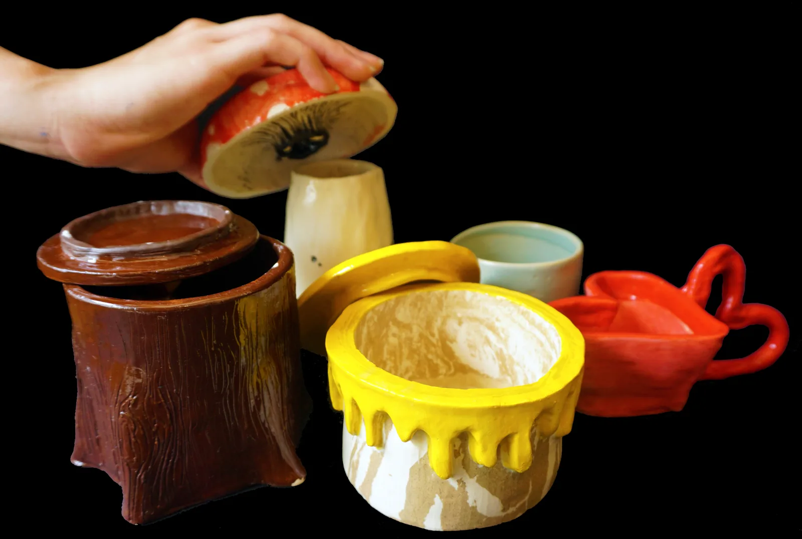
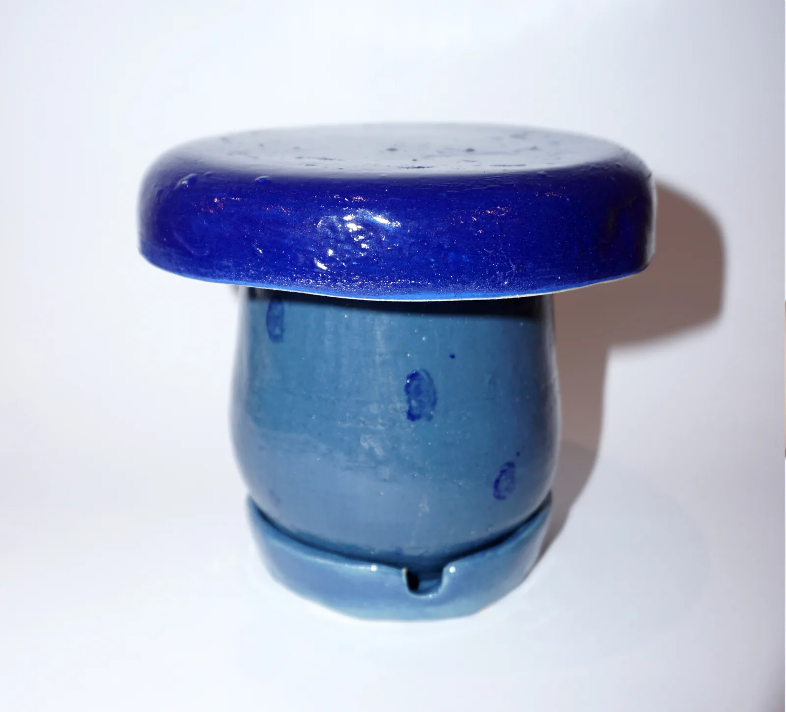
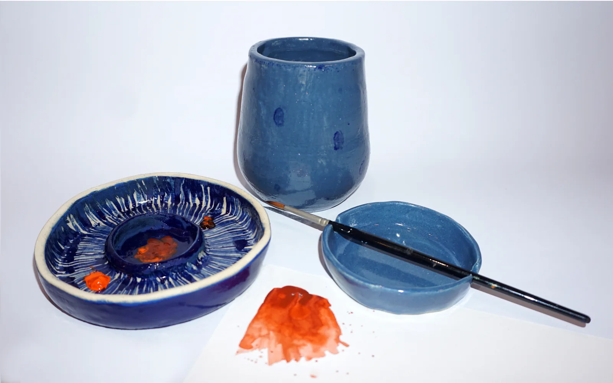
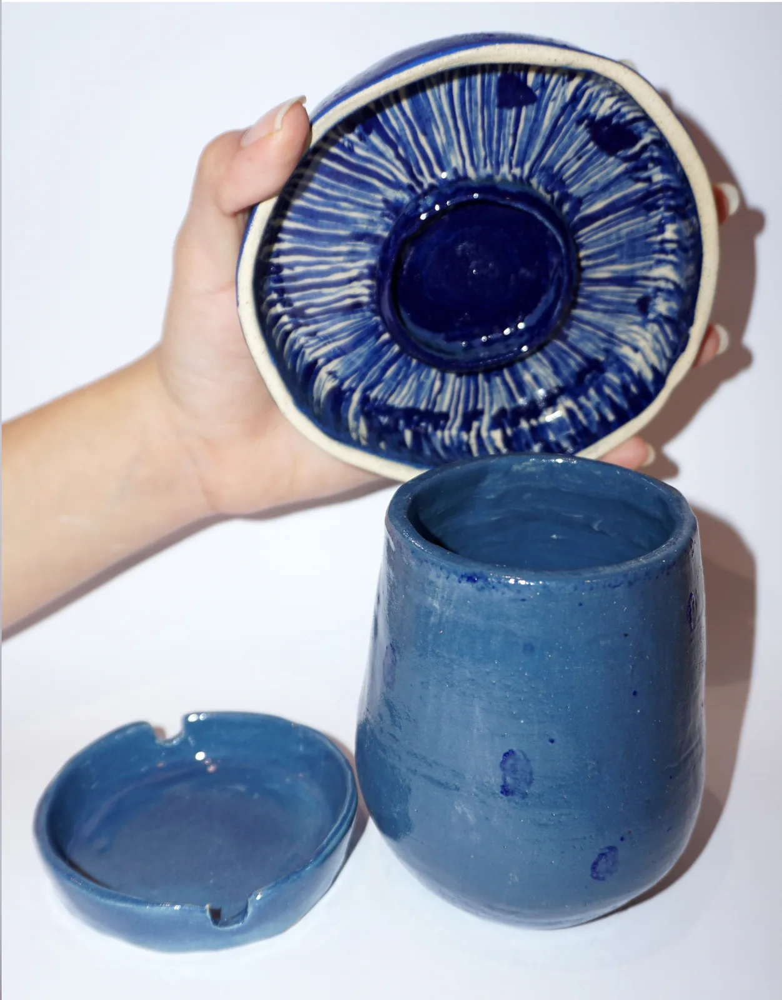

Ceramics
Two clay collections: a Winnie the Pooh set you can actually hold, and a studio tool that stops being clutter.

A pottery collection inspired by Winnie the Pooh. The story is set in the English countryside and each piece pulls from a different part of it: a honey pot, Piglet, tree-bark texture, Eeyore. Jars, mugs and bowls, all in clay and glaze. It started from a genuine love for the story and became an excuse to translate something nostalgic into something you can hold.

Pot! is a multifunctional studio tool — brush holder, water cup and palette in one. As an artist I was always looking for a palette that did not disrupt the feel of my workspace; most of them do. Pot! was the answer: something that blends into a desk rather than cluttering it, and works just as well for anything else you need it for.

In hand
Thrown, glazed and used — the scale is set by the hand that holds it.

Credits — Hand-built and wheel-thrown clay, glazed. Making and photography: Tanaya Agarwal.